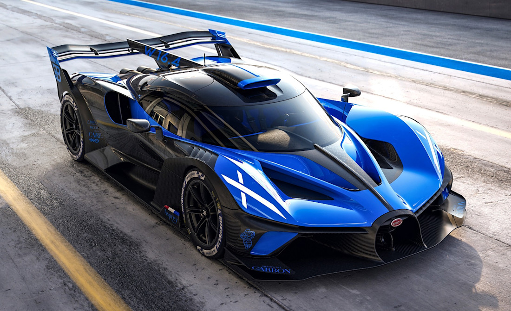

Automobilul
Automobilul nu a fost doar o invenție mecanică, ci catalizatorul celei mai mari schimbări sociale din istoria modernă. De la libertatea de mișcare individuală la restructurarea orașelor, mașina a redefinit conceptul de distanță.

1886: Benz Patent-Motorwagen
(0.75 CP, 16 km/h)
(0.75 CP, 16 km/h)
➔

Prezent: Bugatti Bolide
(1850 CP,500+ km/h)
(1850 CP,500+ km/h)
Această lucrare analizează parcursul tehnologic de peste 250 de ani, structurat pe epoci de inovație, de la primele experimente cu abur, trecând prin epoca de aur a designului interbelic, până la vehiculele autonome ale viitorului apropiat.